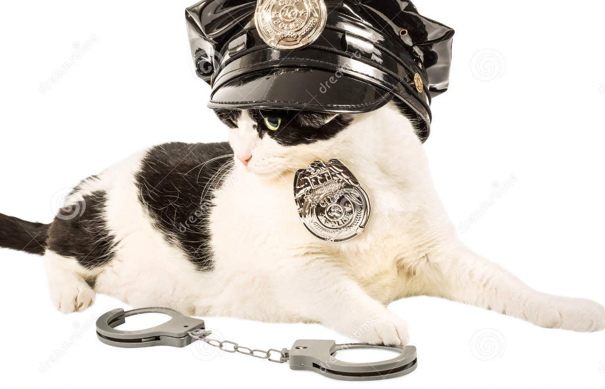

The cop gathered his handcuffs and prepared to arrest the baby.
As he was putting them on he noticed how soft the baby's hands were.

How blue and clear the baby's eyes were.
How charming the baby's smile was.
He was falling madly in love with the baby, and the baby was falling in love with him.
YOU CHOOSE
Does the cop marry the baby?
Or does he bury his desire and perform his duty?